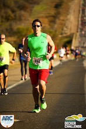

That is the motto Kevin Durant scrawled across his mirror during his freshman year at the University of Texas, and it is a mantra I have applied to my personal and professional life. When things come easily, it reminds me to cultivate my talents and strive for the MVP trophy, and when things are a struggle it reminds me that perseverance is also a path to success. A combination of hard work and talent led me to web development, a field that allows me to explore my wide array of interests and offers an endless stream of new opportunities and experiences.
I strive to grow as I travel life's path and every day I look for a lesson that will make me a better person tomorrow. While I value a formal education, and am proud of my time at the University of Texas, I believe that many indispensable traits are learned outside the classroom. I learned teamwork and collaboration while working in kitchens. I learned customer service and the value of a smile while bartending. I learned patience and how to communicate complex ideas in a relatable way while tutoring math to junior high students. I learned how to break an impossibly overwhelming task into smaller, achievable goals while training for a marathon. I am continuously looking for my next challenge and my next lesson.
When not at my computer I enjoy: live music; travelling; running the trail at Ladybird Lake; practicing yoga; watching Longhorn sports, and enjoying all the things Austin has to offer.